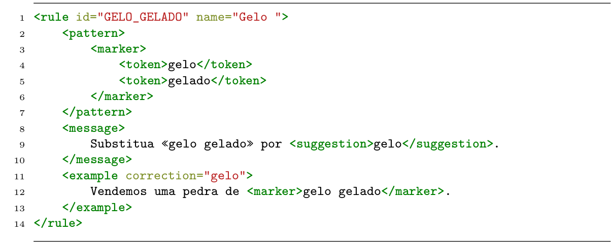
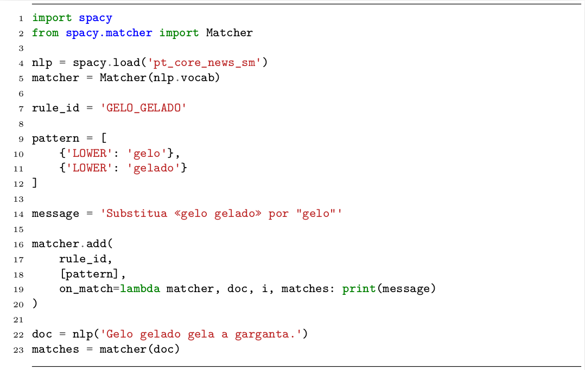

7 Correção Automática de Redação
Vídeo (Mesa redonda)
7.1 Introdução
A Correção Automática de Redação (CAR) é uma das diversas aplicações do Processamento de Linguagem Natural (PLN). De forma geral, ela pode ser definida como “o processo de avaliação e atribuição de nota em textos escritos em prosa, via programas computacionais” (Shermis; Burstein, 2013) 1.
Embora a correção manual de redações seja uma prática bastante antiga – os primeiros sistemas automáticos para essa finalidade surgiram na década de 60, para a língua inglesa – só mais recentemente foram adaptados para o português.
Em inglês, as áreas de Automated Essay Scoring (AES) e Automated Essay Evaluation (AEE) surgem como distintas, porém complementares e, às vezes, com alguma intersecção. A AES tem como principal objetivo automatizar a atribuição de nota, enquanto a AEE amplia esse foco, incluindo também a geração de feedbacks para o aluno, contribuindo de forma mais direta com o processo de aprendizagem da escrita.
A AES costuma ser traduzida para o português como Avaliação Automática de Redação (AAR) (Bittencourt Jr., 2020; Da Silva Jr., 2021; Lima et al., 2023), enquanto a AEE está associada ao termo Correção Automática de Redação (CAR), apesar de se tratar de um falso cognato. Neste capítulo, adotamos o termo CAR para nos referirmos a uma solução mais abrangente, que contempla tanto a avaliação quanto o feedback, isto é, que reúne as funções de AES e AEE. Para que seja considerada como solução completa de CAR, a aplicação deve contemplar pelo menos três etapas básicas:
- a detecção de desvios no texto;
- a atribuição da nota, seja ela global ou por critério; e
- um feedback para o aluno.
Cada uma dessas etapas pode ser vista como uma aplicação independente no PLN. Por exemplo, existem várias ferramentas de auxílio à escrita, bem como corretores ortográficos e gramaticais, que executam exclusivamente a tarefa de identificação de desvios no texto; e isso constitui uma aplicação em si. Da mesma forma, o fornecimento de sugestões de melhoria se aproxima de aplicações de geração de linguagem natural (ou Natural Language Generation).
Ainda que essas funcionalidades possam ser oferecidas de forma independente, consideramos que uma solução pedagógica robusta de CAR deve integrar as três etapas mencionadas, as quais serão exploradas com mais profundidade ao longo deste capítulo.
Antes de abordar cada uma das etapas, porém, faremos uma breve explicação sobre o objeto de estudo da CAR, que é a redação escolar, definindo e exemplificando os principais gêneros e tipos textuais, os critérios avaliados e alguns modelos brasileiros de correção de redação.
7.1.1 O que é uma redação escolar?
A redação escolar é considerada um gênero textual, mas também pode ser distribuída em vários tipos e gêneros textuais. As redações, ou textos2 de redação escolar, são geralmente utilizadas para avaliar as habilidades de escrita, interpretação, argumentação e criatividade dos alunos, bem como para desenvolver o pensamento crítico e a capacidade de expressão escrita. As redações podem abordar temas diversos, desde assuntos cotidianos até questões mais complexas e abstratas, e são uma forma importante de avaliar o progresso dos alunos ao longo do tempo.
Para fins didáticos e de correção de redação, é importante salientar a diferença entre tipo textual e gênero textual, já que as redações devem atender a um tipo específico e a algum gênero específico, a depender da proposta de redação. Por exemplo, a redação do Enem3 é sempre do tipo argumentativo e do gênero dissertação-argumentativa.
Os tipos textuais (ou “modos textuais”, para Marcuschi (2008, p. 154)) se referem à forma como o texto é organizado, ou seja, a sequência linguística e os aspectos lexicais, sintáticos, tempos verbais, relações lógicas que são mobilizados para constituir o texto. Existe um conjunto bastante limitado de tipos textuais, o qual abrange: narração, argumentação, descrição, exposição e injunção. Ressaltamos que um texto raramente apresenta apenas características de um mesmo tipo. Deste modo, classificamos um texto como sendo de um determinado tipo quando há predominância de elementos que o caracterizam.
Já os gêneros textuais são formas de comunicação que se desenvolvem em diferentes contextos sociais e culturais e se caracterizam pelo seu propósito ou objetivo comunicativo. Em outras palavras, cada gênero tem uma finalidade específica e é utilizado em determinadas situações comunicativas, dependendo de fatores sociais, culturais, dos falantes, da relação entre eles, do contexto, da finalidade da comunicação, dentre vários outros. Dependendo da situação comunicativa, cada gênero pode exigir um registro ou vocabulário específico, a norma culta ou coloquial, na modalidade escrita ou oral da língua.
Por esse motivo, os gêneros são mais fluidos, podendo surgir, modificar-se, mesclar com outros, desaparecer e reaparecer com outra roupagem em outro contexto ou época. São exemplos de gêneros textuais: bula de remédio, carta pessoal, diálogo informal, e-mail, edital de concurso, inquérito policial, piada, receita culinária, reportagem, resenha, sermão etc.
As redações podem apresentar diversos formatos e objetivos, dependendo do nível de ensino e do tema proposto pelo professor ou pela instituição de ensino. Dentre os tipos e gêneros textuais mais comuns associados à redação escolar, convém mencionar:
- Dissertação, em que o autor apresenta e disserta sobre um determinado tema, apresentando informações e argumentos relacionados ao assunto;
- Narração, em que o autor conta uma história, relatando fatos e acontecimentos em alguma ordem que pode ser cronológica ou não;
- Carta, em que o autor se dirige a um destinatário específico, fazendo requisições, solicitações ou expressando suas opiniões e sentimentos;
- Artigo de opinião, em que o autor defende um ponto de vista sobre um tema específico, utilizando argumentos e evidências para sustentá-lo;
- Resenha, em que o autor faz uma análise crítica de um texto, obra ou produto.
Esses são apenas alguns dos tipos e gêneros de redação escolar mais comuns. Os demais incluem a descrição, a exposição, a crônica, o relatório, o conto, a fábula, entre outros.
7.1.2 O que é avaliado?
Vários aspectos do texto são avaliados em uma correção de redação, tais como o uso da norma padrão da língua portuguesa, a adequação ao tema e ao gênero, questões relacionadas à coesão, à coerência, à progressão textual etc. Cada modelo de correção organiza e nomeia seus critérios de avaliação de formas distintas, mas, basicamente, todos eles analisam:
- Língua portuguesa
-
Avalia a linguagem usada para expressar o conteúdo, verificando se há desvios ortográficos e/ou gramaticais, se a norma (culta ou coloquial) está de acordo com o tipo de texto exigido, se há problemas de estrutura sintática nas frases, orações e períodos, se o vocabulário foi usado adequadamente etc. Outros nomes para esse critério incluem “Escrita”, “Modalidade escrita”, “Norma culta”, “Norma padrão”, “Correção gramatical e adequação vocabular” ou “Expressão (modalidade)”.
- Tema
-
Esse aspecto avalia a adequação da redação em relação à temática proposta, verificando se a abordagem do tema foi completa, se tangenciou ou fugiu do tema proposto, se o abordou de forma superficial ou profunda etc. Também é chamado de “Abordagem temática”, “Desenvolvimento do tema”, “Proposta temática” ou “Progressão temática”.
- Gênero
-
Esse critério considera a adequação da redação em relação ao tipo textual e ao gênero textual exigidos na proposta. Também pode ser chamado de “Gênero textual”, “Adequação ao tipo textual”, “Organização do texto dissertativo-argumentativo” ou “Estrutura (gênero/tipo de texto)”.
- Coerência
-
Neste quesito, avalia-se a coerência entre as ideias, a ordem dos argumentos, a profundidade da argumentação, a clareza e autoria das ideias desenvolvidas, assim como verifica-se se há contradições no texto, se as informações são vagas e/ou muito generalistas, se falta informação, dentre outros. Também pode ser chamado de “Progressão textual”, “Defesa do ponto de vista”, “Coerência dos argumentos”, “Estrutura (coerência)”, “Indícios de autoria” e outros termos.
- Coesão
-
Avalia o uso correto ou incorreto, presença ou ausência, pertinência ou não de operadores coesivos, tais como conjunções, preposições, pronomes e expressões discursivas. O critério é também chamado de “Coesão e articulação”, “Articulação das partes do texto”, “Expressão (coesão)”, “Conexão entre os parágrafos”, “Uso de operadores argumentativos”, “Recursos coesivos”, dentre outros termos.
Além desses aspectos que são comuns a todos os modelos de correção, alguns professores, instituições de ensino e vestibulares também podem avaliar a “Leitura”, ou seja, o uso e interpretação dos textos motivadores ou da coletânea que embasa a proposta de redação, e também a presença e adequação da “Proposta de intervenção”, que é um critério exclusivo do Enem.
7.1.3 Alguns modelos brasileiros de correção
O principal modelo de correção de redação, no Brasil, é o Enem, responsável pela avaliação anual de milhões de alunos4. Mas também existem outros modelos de correção relacionados a vestibulares e universidades específicas, tais como Fuvest, Unesp, Unicamp, FGV e outros igualmente relevantes. Apesar de haver critérios gerais que são avaliados por todos eles, cada um tem autonomia para definir sua grade específica, os pesos de cada critério e sua própria forma de avaliação.
O Quadro 7.1 apresenta quatro modelos brasileiros de correção relacionados a vestibulares, indicando o gênero textual exigido, seus critérios de avaliação e faixas de nota possíveis.
Quadro 7.1 Modelos de correção de vestibulares.
No modelo de correção do Enem5, o aluno é avaliado quanto à produção de um texto do tipo dissertativo-argumentativo para um tema específico, que muda todo ano. A avaliação é dividida em 5 competências (critérios avaliativos), cada uma no intervalo de notas de 0 a 200. A soma direta das notas das competências leva à nota total, que fica no intervalo de 0 a 1000. Considerando os critérios básicos descritos na Subseção O que é avaliado?, vale dizer que o Enem os divide da seguinte forma: (i) Língua Portuguesa, (ii) Tema e Gênero, (iii) Coerência e (iv) Coesão. Além desses, o modelo ainda avalia um quinto critério, que é a presença e adequação da “Proposta de Intervenção”, que consiste na sugestão de ação ou medida interventiva para solucionar ou minimizar o problema associado ao tema proposto.
O vestibular da Fuvest6 também exige um texto do gênero dissertativo-argumentativo para um tema específico que muda todo ano. A partir do vestibular de 2026, o candidato também tem mais uma opção de gênero (narrativo), além da dissertação, ambos sobre o mesmo tema. O modelo de avaliação até 2024 agrupava os critérios básicos em 3 (Tema/Gênero, Coerência/Coesão e Língua Portuguesa). A partir do vestibular 2026, essa grade está dividida em 4 critérios: (i) Desenvolvimento do tema, uso da coletânea e autoria, que vale de 0 a 15 pontos; (ii) Compreensão e atendimento da proposta quanto ao gênero e tipo de texto, que pode somar até 10 pontos; (iii) Recursos linguísticos (coesão e coerência) e progressão textual, também de 0 a 15 pontos; e (iv) Convenções da escrita e adequação vocabular, com pontuação máxima igual a 10. Com a soma de pontos dos 4 critérios, o aluno pode tirar de 0 a 50.
Já no modelo de correção da Unesp7, os textos, que devem seguir o gênero dissertação-argumentativa, também são avaliados em três eixos, agrupados da seguinte forma: (i) Tema, (ii) Gênero/Coerência e (iii) Língua Portuguesa/Coesão. A pontuação individual ou peso por critério não é divulgado no material do candidato, mas é definido que a pontuação final fica entre 0 e 28 pontos.
A redação da Unicamp8, a cada ano, varia a exigência dos tipos e gêneros textuais9, geralmente oferecendo duas alternativas das quais o candidato deve escolher uma para execução. A Unicamp agrupa os critérios básicos da seguinte forma: (i) Tema, (ii) Gênero e (iii) Língua Portuguesa/Coerência/Coesão. Além desses três eixos, também avalia a “Leitura”, que corresponde à leitura e interpretação crítica dos textos fornecidos na proposta, sem contudo copiá-los ou parafraseá-los. Na avaliação, cada critério possui pesos diferentes: Tema varia entre 0 e 2 pontos, Gênero entre 0 e 3, Leitura entre 0 e 3 e Língua Portuguesa/Coerência/Coesão varia entre 1 e 4 pontos. A soma dos pontos de cada critério leva à nota final, cujo valor máximo é de 12 pontos.
Fora as diferenças já apontadas, convém ressaltar que todos os modelos penalizam o aluno (zerando a redação) no caso de falhas graves. No entanto, cada modelo define um conjunto específico de falhas graves, que podem ser: fuga ao tema, fuga ao gênero, assinatura na prova, desenho ou sinal gráfico, redação em língua estrangeira, caligrafia ilegível, recado para o corretor, parte desconectada, texto insuficiente, dentre outras situações10.
Quanto ao título da redação, o Enem e a Unesp não exigem, mas também não proíbem; simplesmente desconsideram para a avaliação da redação. Já a Fuvest não menciona a exigência de título no Manual do candidato do vestibular Fuvest 202411, mas coloca como instrução no Caderno de prova12. Já a Unicamp pode ou não exigir título, a depender do gênero textual proposto.
Essa grande variedade de modelos de correção é considerada um dos grandes desafios para a CAR, não sendo recomendado treinar um modelo computacional que abarque todos os tipos de correção ou que misture redações dos vários tipos como dados de treinamento para algum modelo. A exigência por modelagens de nota específicas por modelo de correção não impede, no entanto, o reaproveitamento de parte das ferramentas de correção, como a detecção automática de desvios no texto, desde que modelos de correção distintos tenham diretrizes similares para esse tipo de tarefa.
Todas essas questões serão mais detalhadas ao longo deste capítulo, que está organizado da seguinte forma: a Seção Detecção de desvios no texto descreve como fazer a detecção de desvios em textos em português, demonstrando alguns tipos de desvios e os formalismos usados. A Seção Atribuição de nota apresenta os principais trabalhos da literatura que realizam a atribuição da nota para redações em português. A Seção Feedback para o aluno demonstra as possibilidades de geração de um feedback para o aluno. Na Seção Correção manual vs(?) correção automática, discutimos as vantagens e desvantagens da correção manual e da correção automática, a fim de esclarecer ao leitor que ambas possuem potencialidades, mas também limitações. Por fim, nas Considerações finais (Seção Considerações finais), retomamos os pontos principais do capítulo.
7.2 Detecção de desvios no texto
Conforme apresentado na Introdução (Seção Introdução), consideramos que uma das etapas da Correção Automática de Redação (CAR) é a detecção ou identificação de desvios13. Essa etapa nem sempre é realizada nos trabalhos de Avaliação Automática de Redação, ou, por vezes, os desvios são contabilizados para o cálculo da nota, porém não são apresentados ao aluno.
A detecção desses desvios costuma ser feita por meio de três abordagens distintas: baseada em regras (abordagem simbólica), baseada em modelos estatísticos (abordagem estatística) e a baseada em LLMs (abordagem gerativa). Os sistemas baseados em regras são mais adequados para identificar desvios gramaticais, o que é mais comum de ser cometido por falantes nativos da própria língua, enquanto os estatísticos capturam melhor os desvios de uso, que são erros mais comuns por não-nativos14. A abordagem gerativa tem se tornado uma opção muito usual desde a popularização dos LLMs (Subseção Modelos de Linguagem Neurais Modernos) e suas constantes melhorias.
Embora a abordagem simbólica (baseada em regras) seja considerada obsoleta para tarefas mais complexas, ainda é a mais utilizada atualmente para detectar desvios na área de CAR. Para outros tipos de tarefas, modelos estatísticos e neurais performam melhor e são mais escaláveis do que modelos simbólicos. A abordagem gerativa pode ser interessante como ferramenta de correção do texto, porém, ao apontar desvios, as respostas estão sujeitas a alucinações (situação exemplificada no Capítulo ChatGPT, MariTalk e outros agentes de conversação). Apesar do desempenho de modelos estatísticos e LLMs, a abordagem simbólica permite, com alta precisão, mostrar ao aluno o trecho exato que contém o desvio, explicar por que está errado e ainda fazer sugestões de correção.
Para o português, existem recursos disponíveis, tais como o CoGroo15 e o LanguageTool16, que são repositórios contendo regras gramaticais para a língua portuguesa. Esses recursos têm versões livres, gratuitas e de código-aberto, com extensão para navegadores web e também acopláveis a editores de texto.
Também há plataformas de correção de redação que desenvolveram seu próprio conjunto de recursos linguísticos e regras gramaticais, o que é uma boa opção quando há um padrão muito claro e estruturado que se possa expressar com regras simbólicas ou expressões regulares, que é o caso dos desvios mais comuns em redações.
Na Subseção Tipos de desvios caracterizamos alguns dos tipos de desvios mais comuns em redações. Posteriormente, na Formalismos de regras, apresentamos duas alternativas de formalismo para a definição de regras de detecção de desvios.
7.2.1 Tipos de desvios
Existem diversos tipos de desvios que podem ser marcados em uma redação, como os ortográficos, os gramaticais (ou sintáticos), os de uso de vocabulário ou registro, os desvios no uso de recursos coesivos, dentre outros. Para cada modelo de correção de redação, é possível criar uma taxonomia própria de tipos de desvios que se pretende identificar em um texto.
Ressaltamos que a criação de recursos para esse tipo de tarefa é um processo difícil, moroso e custoso, que depende de especialistas. Deste modo, é importante estabelecer um planejamento criterioso caso seja necessário criar recursos próprios.
Nesta seção exploramos alguns tipos de desvios, por serem os mais comuns, mas é importante esclarecer que os tipos de desvios não se limitam aos indicados neste capítulo. Na Subseção Desvios ortográficos descrevemos os desvios ortográficos, na Subseção Desvios gramaticais, os gramaticais e na Subseção Outros tipos de desvios, outros tipos de desvios mais comuns em redações.
7.2.1.1 Desvios ortográficos
A grande maioria dos desvios ortográficos é facilmente detectável e tratável. O simples uso de um bom dicionário de língua portuguesa já indica quais palavras existem e quais não existem na língua. Portanto, identificar palavras com grafia desviante do léxico é uma tarefa relativamente simples.
O Unitex17, por exemplo, dispõe de três dicionários muito completos para o português: o Delas (com cerca de 75.000 formas canônicas simples), o Delaf (com cerca de 9.000.000 entradas de palavras flexionadas) e o Delacf (com cerca de 4.000 entradas de formas compostas). Esse recurso pode ser usado como uma primeira etapa de identificação de desvios ortográficos, a fim de identificar palavras que existem no léxico do português e palavras desviantes.
Outros desvios ortográficos se dividem em:
- problemas de falta de sinal gráfico ou uso indevido de acentuação (ex: “prática” x “pratica”);
- problemas de capitalização (uso de maiúscula onde deveria ser minúscula ou uso de minúscula onde deveria ser maiúscula);
- grafia incorreta de palavras homônimas ou parônimas (ex: “mas” x “mais” ou “há” x “a”);
- problemas de segmentação (uso de hífen, palavras juntas que deveriam ser separadas ou palavras separadas que deveriam ser escritas juntas); e
- desvios com relação à nova ortografia.
Para todos esses casos, a abordagem baseada em regras precisa identificar corretamente o contexto em que a palavra-alvo está inserida. O que torna essa tarefa complexa e nem sempre bem sucedida é que a identificação do contexto linguístico em uma abordagem simbólica muitas vezes depende de um bom parser e um bom tagger. Conforme foi apresentado em capítulos anteriores (Capítulo Sequência de caracteres e palavras e Capítulo Ferramentas e recursos para o processamento sintático), essas ferramentas nem sempre têm uma ótima performance em português.
7.2.1.2 Desvios gramaticais
Os desvios gramaticais, também chamados de desvios sintáticos, correspondem aos problemas de estrutura sintática, ou seja, nas relações entre as palavras, que podem estar no escopo de uma sentença, um sintagma, um grupo ou uma string. Por exemplo, na sentença “As menina dançam”, existe um desvio de concordância nominal entre “As” (plural) e “menina” (singular) e/ou um desvio de concordância verbal entre “menina” (singular) e “dançam” (plural).
Além dos desvios de concordância (que correspondem a cerca de 18,9%), também são comuns em redações escolares: os de vírgula e pontuação (44%), de formas verbais (6,8%), pronomes (5,8%), preposições (5,7%), crase (4,2%), segmentação (4,1%), regência (3,4%), conjunções (2,3%), determinantes (2%) e outros (2,3%)18.
Apesar de os desvios de pontuação e vírgula serem os mais frequentes, são também os mais difíceis de serem tratados, pois em geral a vírgula separa constituintes sintagmáticos, o que exigiria uma análise sintática por constituência, e esse tipo de parser é raro para o Português19.
As regras gramaticais que exigem um contexto linguístico local, por exemplo, para avaliação da crase ou concordância nominal, geralmente funcionam melhor, ao passo que as regras que dependem de um contexto linguístico maior, com macrorrelações de dependência (Capítulo Sequência de caracteres e palavras), ou quando um token está muito distante do outro, tendem a performar mal.
7.2.1.3 Outros tipos de desvios
Além dos desvios ortográficos e gramaticais, há outros problemas textuais que podem ser marcados automaticamente em redações, como:
- Desvios de vocabulário e registro – quando o texto apresenta escolhas lexicais inadequadas ao gênero ou à situação comunicativa. Por exemplo, em uma dissertação argumentativa, o uso excessivo de marcas de oralidade (“tipo”, “a gente”) ou de pronomes em primeira pessoa (“eu acho”, “na minha opinião”) pode ser considerado um desvio de registro.
- Desvios de coesão – referentes à falta de recursos coesivos ou ao emprego incorreto de conectivos, pronomes ou expressões responsáveis por articular as ideias do texto. Um exemplo recorrente é o uso de “contudo” no sentido de conclusão, ou o uso do pronome “onde” em contextos não locativos (“A época onde…”).
- Desvios de adequação ao gênero – quando o aluno não segue as convenções esperadas para o gênero textual proposto. Quando o aluno conta histórias ou traz longos trechos narrativos em dissertações argumentativas, por exemplo, pode configurar desvio.
- Desvios de progressão temática – quando há repetição excessiva de ideias, incoerências internas, rupturas bruscas na argumentação ou inserção de trechos desconectados do tema central, prejudicando a continuidade do texto.
Enfim, dependendo do modelo de correção adotado e da parametrização dos critérios de correção de cada banca, definem-se quais tipos de desvios devem ou não ser marcados no texto. A detecção desses desvios pode ser feita por meio de regras baseadas em listas lexicais, padrões sintáticos ou análise do contexto discursivo. Assim como nos casos ortográficos e gramaticais, as abordagens mais eficazes são aquelas que conseguem levar em conta o contexto em que a palavra ou expressão ocorre, reduzindo falsos positivos. Cabe destacar que, além da marcação de desvios, é igualmente relevante identificar e registrar aspectos positivos presentes na redação. A sinalização de usos adequados e escolhas bem-sucedidas contribui não apenas para reforçar práticas corretas, mas também para justificar a atribuição de notas mais altas nos critérios correspondentes.
7.2.2 Formalismos de regras
Há inúmeras maneiras de escrever regras de forma que o computador consiga lê-las e interpretá-las. Cada ferramenta pode criar seu próprio formalismo e mecanismo de inferência, mas também há alguns disponíveis gratuitamente e que podem ser usados para um projeto inicial.
O LanguageTool20 implementa um mecanismo de inferência para regras formalizadas em XML (Extensible Markup Language). Para o português, o software disponibiliza cerca de 2.880 regras abrangendo várias categorias linguísticas, tais como: gramática geral, ortografia, pontuação, capitalização, tipografia, estilo, redundância, palavra composta, semântica, repetição, linguagem informal, uso de pronomes, dentre outras. Essas regras podem ser consultadas via repositório Language Tool Community21.
Como exemplo, reproduzimos o formalismo de uma regra para identificar redundância quando se escreve “gelo gelado”, na Figura 7.122.

Neste exemplo, consta o id e o nome da regra (linha 1), seguidos do padrão a ser buscado (linhas de 2 a 7), seguido da mensagem a ser mostrada (linhas 8 a 10), e de um exemplo de uso (linhas 11 a 13).
A complexidade das regras pode variar dependendo da complexidade do problema linguístico ou do padrão a ser buscado. No caso do código na Figura 7.1, o problema linguístico em questão – a redundância – é muito simples, e isso se reflete na simplicidade da regra, a qual procura basicamente dois tokens: o primeiro é “gelo”, imediatamente seguido do segundo, que é “gelado”. Por outro lado, problemas linguísticos mais complexos também exigem regras mais complexas que podem usar lemas, tokens, etiquetas morfológicas, morfossintáticas, expressões regulares, relações de dependência, entidades nomeadas, dentre outros.
Ressaltamos que a performance das regras do LanguageTool não é ótima, mas é um recurso útil para quem não quer começar essa tarefa do zero. Considerando que o software possui versão aberta23, é possível corrigir e definir novas regras usando o mesmo formalismo e avaliá-las por meio da própria ferramenta.
Outra ferramenta que podemos indicar para esse tipo de tarefa é o módulo Python spaCy24, que implementa três mecanismos para identificação de padrões em textos que podem ser bastante úteis na tarefa de detecção de desvios. Esses mecanismos fazem parte do sub-módulo chamado Rule-based matching, que permite a busca por um token em determinado contexto (chamado Matcher), por uma frase ou sintagma (chamado Phrase matcher), ou ainda por relações de dependências entre elementos da sentença (chamado Dependency matcher). Eles podem ser usados separadamente ou combinados entre si para garantir melhor acurácia na busca por padrões linguísticos.
Na Figura 7.2, apresentamos código Python que utiliza a classe Matcher do spaCy para a definição da regra que identifica a redundância “gelo gelado”, que foi reescrita, e executa a busca por padrões em um texto.

O exemplo inicia importando o módulo spacy e, especificamente, a classe Matcher (linhas 1 e 2). Em seguida um pipeline pré-treinado do spaCy para português é carregado (linha 4) e seu vocabulário é utilizado para inicializar uma instância da classe Matcher (linha 5). Em seguida, são definidos um identificador para a regra (linha 7), o padrão buscado de dois tokens (linhas 9 a 12), cada um representado por um dicionário, e a mensagem que deve ser impressa na tela caso o padrão seja identificado no texto (linha 14). Nas linhas de 16 a 20, a regra é adicionada à instância matcher, incluindo a definição de uma função para a impressão da mensagem na tela quando o padrão é encontrado (on_match). As linhas 22 a 23 definem um texto para teste de busca do padrão e a execução dessa busca.
O spaCy não conta com um repositório de regras pré-definidas para detecção de desvios. Contudo, por ser uma ferramenta de PLN, disponibiliza uma série de funcionalidades que podem contribuir para essa tarefa de maneira mais simples, i.e. sem a necessidade de alterar a implementação dos mecanismos de busca já disponíveis.
A detecção de desvios no texto é uma etapa importante em CAR, especialmente por indicar e colaborar para a aprendizagem da escrita. Os desvios encontrados podem, inclusive, ser utilizados na etapa de atribuição de nota à redação. Na Seção Atribuição de nota apresentamos as principais abordagens e tendências nessa área, além de citar os principais trabalhos dedicados a redações em português.
7.3 Atribuição de nota
A atribuição de nota a uma redação pode ser feita de forma global, ou seja, uma nota única para a redação inteira, ou por meio de notas individuais para cada critério de avaliação. O principal desafio desse processo está na grande diversidade de matrizes de correção existentes (ver Subseção Alguns modelos brasileiros de correção) – que variam quanto ao modelo adotado, à escala e às faixas de pontuação, bem como à quantidade e à distribuição dos critérios avaliativos.
Até recentemente, as abordagens faziam uso de corpus rotulado, i.e., conjuntos de redações que já foram avaliadas manualmente e possuem indicação de nota e/ou adequação da redação em relação ao critério avaliado. Desse modo, as técnicas utilizadas para atribuição de nota se enquadram na área de aprendizado supervisionado por classificação ou regressão. Hoje, com a popularização dos LLMs, muitas empresas optam por essa abordagem gerativa, por ser mais rápida e barata, apesar de menos controlável.
O Project Essay Grade (PEG) (Ajay et al., 1973) foi uma das primeiras ferramentas estáveis para a atribuição de notas em redações com boa performance dentro do contexto aplicado: redações universitárias curtas em inglês. No entanto, a falta de acesso a computadores foi, por algum tempo, impedimento para o desenvolvimento de outras soluções. Na metade da década de 90, dados os avanços tecnológicos de hardware e software, a área de AES viu um reaquecimento e, desde então, surgiram novos trabalhos consistentemente, inclusive apoiados por abordagens que tiveram ascensão a partir da década de 2010, como deep learning e Transformers.
Como mencionado na Seção Introdução, é importante conhecer o contexto e modelo de correção para realizar a atribuição de nota de forma efetiva. A despeito disso, diferentes estratégias podem ser reaproveitadas e combinadas para a avaliação de redações de modelos de correção distintos. Na Subseção Como atribuir nota a redações? apresentamos uma visão geral de técnicas e estratégias para a atribuição de notas em redações. Dada a relevância do Enem para o contexto de redações em português, a Subseção Atribuição de nota para redações do Enem traz trabalhos especificamente voltados para a automatização da avaliação em redações desse modelo de correção.
7.3.1 Como atribuir nota a redações?
A abordagem clássica para atribuição de notas envolve a extração de atributos (features) a partir do texto, que são utilizados para descrever redações de um conjunto de treinamento, além da transformação e seleção desses atributos, em um processo nomeado engenharia de atributos. Os dados extraídos servem de entrada para um algoritmo de aprendizado para a geração de modelos capazes de atribuir nota a novas redações a partir dos valores de seus atributos.
A primeira versão do PEG (Ajay et al., 1973) utilizava atributos baseados em contagens de diferentes elementos do texto, categorizadas em: (i) simples (e.g. número de adjetivos na redação): redações com mais adjetivos são avaliadas com notas maiores por humanos (relação linear); (ii) enganosamente simples (e.g. número de palavras na redação): redações muito curtas são penalizadas, porém, conforme o tamanho da redação aumenta, esse atributo perde importância para atribuição de nota (relação logarítmica); e (iii) sofisticadas (e.g. número de palavras que podem representar contextos maiores): o número de conectivos, por exemplo, pode indicar a complexidade de uma sentença.
Considerando a tarefa de atribuição de nota, é possível utilizar atributos que sejam independentes. Ferramentas como Coh-Metrix25 e Linguistic Inquiry Word Count (LIWC)26, são utilizadas em trabalhos como Ferreira et al. (2021) e Ferreira Mello et al. (2022) para a extração de informações linguísticas, como legibilidade e coesão.
Trabalhos que utilizam métricas independentes de conteúdo são capazes de representar critérios de avaliação como Coerência e Coesão. No entanto, critérios como Tema são melhor avaliados por atributos dependentes de conteúdo, como exemplo as matrizes de termos, descritas no Capítulo Conjunto de dados, dataset e corpus, e métricas calculadas a partir dessas matrizes, como a similaridade de cosseno utilizada entre tema e redação em Amorim; Veloso (2017). Em Louis; Higgins (2010) e Persing; Ng (2014), são propostos cálculos de atributos dependentes de conteúdo com base em recursos linguísticos pré-definidos e associados aos temas relacionados às redações utilizadas nos experimentos.
Ainda sobre a extração de atributos, vale mencionar o trabalho de Sousa et al. (2021) que, além de aspectos linguísticos, explora aspectos relacionados à construção da argumentação, por meio de mineração de argumentos. A combinação de diferentes estratégias para extração de atributos é bastante comum, conforme realizado por Amorim; Veloso (2017) que, além de aspectos linguísticos e associados ao tema, incluem métricas associadas ao correto uso da língua, calculadas com base em desvios identificados por ferramentas externas, como as mencionadas na Seção Detecção de desvios no texto.
É importante ressaltar que a inclusão de atributos relacionados a critérios de avaliação específicos não é imprescindível para atribuição de nota global. No entanto, a partir do momento em que se propõe atribuir notas por critérios avaliativos, é interessante incluir atributos que representem cada critério, ou poderá haver discrepância significativa no resultado obtido entre critérios, como observado em alguns trabalhos (Amorim; Veloso, 2017; Fonseca et al., 2018).
Selecionado um conjunto de atributos e realizada a análise estatística dos dados, podemos seguir à etapa de treinamento de modelos. Não convém aqui sugerirmos esta ou aquela técnica ou algoritmo, uma vez que conjuntos de dados distintos podem apresentar resultados também diferentes para os mesmos algoritmos (Ferreira Mello et al., 2022; Ferreira et al., 2021; Fonseca et al., 2018; Marinho et al., 2022a). Ao treinar modelos para atribuição de nota, assim como modelos com outros objetivos, é fundamental definir mais de um algoritmo e configurações para, então, realizar uma comparação estatística entre os resultados obtidos.
Entre os trabalhos que utilizam a abordagem de extração de atributos, há modelos de classificação e regressão treinados com diversos algoritmos, como: regressão linear (Fonseca et al., 2018), Suppport Vector Machines (SVM) (Haendchen Filho et al., 2018, 2019), Gradient Boosting (Fonseca et al., 2018; Marinho et al., 2022a). A comparação entre os modelos se dá, principalmente, pela avaliação dos valores obtidos para métricas como precisão, revocação, medida-F, RMSE e Kappa de Cohen.
Embora seja possível obter resultados satisfatórios pela engenharia de atributos e treinamento de modelos por algoritmos clássicos de aprendizado de máquina, é notável o esforço humano necessário para o processo de extração e seleção de atributos, considerando que muitos dos conjuntos de atributos são compostos por algumas centenas de métricas. Com isso em vista, surgem trabalhos que utilizam outras técnicas para a representação de textos e algoritmos de redes neurais profundas para a tarefa de atribuição de nota.
Alikaniotis et al. (2016) propõem uma técnica de word embeddings treinada com base em notas de redações, que é utilizada com redes neurais LSTM. O trabalho relata melhores resultados obtidos em comparação com outras abordagens.
Em Fonseca et al. (2018), as word embeddings GloVe são combinadas com redes LSTM bidirecionais e os resultados são comparados, também, com uma abordagem que utiliza engenharia de atributos. Os autores relatam que, embora a técnica de redes neurais tenha gerado bons resultados, o modelo gerado a partir de atributos se mostrou superior em diferentes aspectos.
Mayfield; Black (2020) realizam fine-tuning de modelos pré-treinados (BERT e variações) para a atribuição automática de notas. Apesar de relatar resultados até 5% melhores do que modelos baseados em n-gramas, os autores discutem sobre o tempo de treinamento deste tipo de modelo, que é cerca de 100 vezes mais demorado do que outras abordagens, e sobre o impacto que isso pode ter em fluxos mais dinâmicos de trabalho.
Bittencourt Jr. (2020) define 14 técnicas baseadas em combinações de diferentes representações de palavras e arquiteturas de redes neurais profundas para a execução da tarefa de atribuição de nota a redações. Os experimentos são realizados com um conjunto composto por redações de 18 temas, sendo que cada técnica é utilizada para o treinamento de um modelo por tema (18 modelos por técnica). Também é proposta uma abordagem para treinamento de modelo multi-tema, ou seja, um modelo único para a atribuição de notas para redações de mais de um tema.
O trabalho de Marinho et al. (2022a) compara 3 tipos de abordagens: (i) engenharia de atributos com algoritmo de regressão, (ii) doc embeddings com algoritmo de regressão e (iii) word embeddings com LSTM. As abordagens (i) e (iii) apresentaram melhores resultados para critérios de avaliação distintos, sendo a abordagem (iii) eleita pelos autores como a melhor. Os resultados da abordagem (iii) ainda foram comparados com resultados de Amorim et al. (2018) e Fonseca et al. (2018), sendo relatado melhor desempenho desta abordagem na atribuição de nota por critério de avaliação.
Nos últimos anos, os LLMs também têm sido explorados para a atribuição automática de notas a redações. Esses modelos podem ser aplicados tanto em cenários de fine-tuning supervisionado (Yang et al., 2020), a partir de bases de redações previamente anotadas, quanto em cenários de few-shot ou zero-shot learning (Shibata; Miyamura, 2025), em que o próprio modelo, orientado por instruções, realiza a atribuição de notas sem necessidade de treinamento extensivo (Pack et al., 2024). Estratégias híbridas também têm sido propostas, como a incorporação de shallow features ou de comparações par-a-par no processo de atribuição de nota, com ganhos de desempenho em relação a métodos tradicionais (Faseeh et al., 2024; Shibata; Miyamura, 2025).
A principal vantagem dessa abordagem é a redução do esforço manual na engenharia de atributos e a possibilidade de maior generalização a diferentes critérios avaliativos, gêneros textuais e modelos de correção. Além disso, frameworks inovadores como o Rank-Then-Score (Cai et al., 2025) e abordagens colaborativas entre humanos e LLMs (Xiao et al., 2025) têm demonstrado resultados promissores, combinando consistência estatística e explicabilidade. Por outro lado, os LLMs ainda apresentam desafios importantes, como custo computacional elevado, necessidade de dados para ajuste fino, bem como riscos de variação e falta de interpretabilidade. Apesar dessas limitações, os LLMs podem se consolidar como alternativa barata para avaliação automática de redações em larga escala, inclusive em cenários multilíngues ou em línguas com menos recursos computacionais, como é o caso do português.
7.3.2 Atribuição de nota para redações do Enem
Especificamente para o português, a maior parte dos trabalhos relacionados à atribuição de notas (e CAR) utiliza corpora compostos por redações do modelo de correção do Enem como base de treinamento. Dada a importância e dimensão do exame no Brasil, há interesse particular em encontrar soluções para a atribuição de nota exclusivamente para esse modelo de correção.
Como descrito na Subseção Alguns modelos brasileiros de correção, o Enem exige a produção de um texto do gênero dissertativo-argumentativo sobre um tema específico que é avaliado em 5 critérios, também chamados de competências: (1) Língua portuguesa, (2) Abordagem temática e adequação ao tipo textual, (3) Progressão textual e defesa do ponto de vista, (4) Coesão e articulação e (5) Proposta de intervenção. Os trabalhos que treinam modelos de atribuição de nota para o Enem predizem uma nota global, porém alguns tentam também aperfeiçoar por competência.
Barbosa de Lima et al. (2023) fazem uma revisão sistemática da literatura envolvendo avaliação automática de redações do Enem. Entre as conclusões apresentadas, destacamos o foco dos trabalhos selecionados no uso de atributos extraídos do texto em vez do uso de modelos pré-treinados baseados em Deep Learning, o baixo detalhamento dos feedbacks gerados e a escassez de análise do impacto prático em aplicações no mundo real. Alguns dos trabalhos apontados por Barbosa de Lima et al. (2023) são detalhados a seguir, por apresentarem relevância teórica ou técnica.
Em Amorim; Veloso (2017), Fonseca et al. (2018), Marinho et al. (2022a) e Bittencourt Jr. (2020), o foco está na atribuição de notas para cada uma das competências, o que pode ser feito com base em modelos treinados para cada competência ou um modelo único que prediz as notas para cada uma delas. Já em Haendchen Filho et al. (2018), é explorada a atribuição de notas para a competência 2, especificamente.
Ao realizar estudo sobre a predição de notas para cada uma das competências do Enem, Haendchen Filho et al. (2019) notaram o significativo desbalanceamento do conjunto de redações e tornaram esse o foco de seu trabalho, a fim de analisar o impacto e tratamento de conjuntos de dados desbalanceados na tarefa de atribuição de nota.
Alguns trabalhos que utilizam redações em português não têm como foco direto a atribuição de nota, mas a proposta de técnicas mensuráveis relacionadas a critérios cuja avaliação pode ser mais complexa. Como exemplo, citam-se as contribuições de Ferreira et al. (2021), Sousa et al. (2021) e Ferreira Mello et al. (2022) para a avaliação das competências 3 e 4.
É notável que, no momento da escrita deste capítulo, não pudemos encontrar nenhum trabalho em que se dê atenção em particular para a melhoria de atribuição de nota na competência 5 do Enem.
Vale ressaltar que os conjuntos de dados utilizados pelos referidos trabalhos não são muito representativos, possuindo até alguns milhares de redações de uma baixa diversidade de temas. O maior conjunto relatado possui 56.644 redações, sem indicação de número de temas (Fonseca et al., 2018). O conjunto de redações com maior número de temas relatado, que também é o segundo em número de redações, conta com 27.184 redações distribuídas entre 18 temas, sendo que o número de redações por tema varia entre 3.070 e 710 (Bittencourt Jr., 2020). Além disso, ambos os maiores conjuntos foram fornecidos por empresas privadas e, portanto, não são públicos.
O tamanho e distribuição do conjunto de dados são considerados obstáculos para o treinamento de modelos de atribuição de notas, especialmente quando utilizadas técnicas de deep learning. Mesmo com o uso de abordagens híbridas ou baseadas em redes neurais profundas, a comprovação e generalização de resultados é um desafio. No entanto, há uma iniciativa para a criação de um conjunto público de redações do modelo Enem para utilização em trabalhos de CAR: até agosto de 2022 era composto por 6.579 redações pré-processadas e divididas em 151 temas (Marinho et al., 2022b) 27.
Para o português brasileiro e para o contexto da avaliação do ENEM, não foram encontradas abordagens baseadas em LLMs voltadas para a correção ou avaliação de redações. Identificamos apenas o trabalho de Locatelli et al. (2025), que exploraram o comportamento de LLMs (GPT-3.5, GPT-4 e MariTalk) no contexto do ENEM, mas no sentido de comparar redações geradas pelos modelos com aquelas escritas por alunos. Portanto, não tiveram o intuito de avaliar automaticamente os textos.
Também não encontramos nenhum trabalho de PLN que tenha relatado a atribuição de notas em redações de outros modelos de correção, como Fuvest, Unicamp, FGV ou outros.
Enfim, acreditamos que ainda há espaço para trabalhos quanto à tarefa de atribuição de notas em redações em português. Contudo, para atingir a meta de soluções completas de correção de redação, apenas a nota é insuficiente do ponto de vista do processo de ensino e aprendizagem. Para suprir essa lacuna, a Seção Feedback para o aluno discute a terceira tarefa de CAR, referente ao provimento de feedback relacionado ao texto.
7.4 Feedback para o aluno
Conforme apresentado na Introdução (Seção Introdução), a última etapa da Correção Automática de Redação (CAR) é o fornecimento de um feedback para o aluno. Até pouco tempo atrás, a correção automática produzia basicamente uma nota como resultado da avaliação da redação. Mas isso já não era mais suficiente e foi surgindo a necessidade de explicar ou justificar essa nota. De acordo com Shermis; Burstein (2013), os primeiros trabalhos se limitavam a dar feedbacks sobre as características e propriedades linguísticas do texto. Pesquisas mais recentes vêm focando em aspectos mais complexos e profundos da língua, que vão além da superficialidade do texto28.
Em uma correção manual, esse feedback é feito pelo próprio corretor da redação, na forma de comentário livre, em linguagem natural, sem seguir nenhum tipo de padronização, podendo tecer críticas, fazer sugestões, elencar pontos fortes e pontos a melhorar, abordar questões gerais ou específicas da redação, enfim, de formas bastante variadas.
Já em uma correção automática, as plataformas que dão algum tipo de feedback sobre a correção o fazem de forma sistematizada. Porém, são raras as empresas que fornecem esse tipo de devolutiva ao aluno. Lima et al. (2023) fizeram uma revisão sistemática da literatura sobre CAR e uma das lacunas que identificaram nos trabalhos para o português é o baixo detalhamento nos feedbacks retornados pelos modelos de avaliação.
Na prática, os corretores automáticos costumam apontar apenas estatísticas básicas do texto, tais como quantidade de conectivos (conjunções), variação lexical (taxa de types por tokens), quantidade de palavras de conteúdo (substantivos, adjetivos, verbos e alguns advérbios), tamanho médio das palavras, frases e parágrafos, dentre outros, o que geralmente não tem utilidade pedagógica para o aluno. A Subseção Estatísticas básicas do texto apresenta como essas informações são calculadas e exibidas.
Algumas plataformas de CAR também disponibilizam para o aluno sistemas ou bots baseados em assistentes de escrita ou ferramentas computacionais de auxílio à escrita. Na Subseção Assistentes de escrita e ferramentas de auxílio à escrita apresentamos como esses recursos e ferramentas são utilizadas em sistemas de CAR.
Mais recentemente, com o surgimento e popularização de LLMs, algumas empresas também já começaram a fornecer feedbacks gerados automaticamente por esses modelos gerativos. Também é possível gerar automaticamente as devolutivas a partir de elementos encontrados ou não encontrados no texto, instanciando palavras ou trechos do texto da redação. Mas isso só é possível se for usada uma abordagem simbólica. Nesse sentido, o feedback pode conter críticas referenciando os desvios apresentados na Seção Detecção de desvios no texto e/ou elogios aos pontos fortes, como será apresentado na Subseção Identificação de pontos fortes e elogiáveis.
7.4.1 Estatísticas básicas do texto
Algumas plataformas e empresas privadas que oferecem serviço de CAR apresentam para o aluno contagens básicas do texto, tais como a quantidade de palavras, caracteres, sentenças, parágrafos e até a quantidade de palavras por classe gramatical (verbos, substantivos, adjetivos, preposições, conjunções etc.). Outras oferecem um pouco mais de informação baseada em estatísticas simples, como a proporção de palavras únicas (types) em relação à quantidade total de palavras no texto (tokens), alguma medida de similaridade entre as sentenças, desvio padrão dos parágrafos, dentre outras.
Um dos recursos disponíveis para recuperar essas informações é o NILC-Metrix (Leal et al., 2023), uma versão brasileira do Coh-Metrix. O NILC-Metrix29 é a atualização mais recente do Coh-Metrix-Port (Scarton; Aluísio, 2010), contendo 200 métricas30 distribuídas nas 14 categorias apresentadas no Quadro 7.2, as quais avaliam a coerência, a coesão, a inteligibilidade, a complexidade e outros aspectos:
Quadro 7.2 Categorias de métricas disponíveis no NILC-Metrix.
Os cálculos dessas métricas geralmente resultam em um valor numérico, o qual não se faz útil para o aluno. Porém, há diferentes maneiras de devolver ao aluno um feedback textual com a interpretação de algumas dessas métricas. Por exemplo, se considerarmos os valores de 4 métricas de Simplicidade Textual, referentes a tamanho de sentença (a saber: long_sentence_ratio31, medium_long_sentence_ratio32, medium_short_sentence_ratio33, short_sentence_ratio34), é possível criar um resultado interpretável para dizer ao aluno que ele constrói sentenças muito longas e isso pode prejudicar a compreensão das ideias do texto.
Tanto as estatísticas básicas quanto as métricas do NILC-Metrix podem ser utilizadas não apenas para devolver feedbacks aos alunos, mas também como atributos para calcular a nota da redação ou de alguns aspectos da redação, conforme apresentado na Seção Atribuição de nota.
7.4.2 Assistentes de escrita e ferramentas de auxílio à escrita
Para prover uma devolutiva ao aluno, também é possível recorrer a sistemas prontos de PLN, como os assistentes virtuais, assistentes de escrita ou ferramentas de auxílio à escrita. Essas soluções podem ser entendidas como aplicações finais, mas, na área de CAR, elas são usadas como recursos ou ferramentas intermediárias para subsidiar a solução completa de CAR.
Essas ferramentas são capazes de gerar, melhorar, reformular e personalizar qualquer tipo de conteúdo textual, incluindo redações. Algumas delas funcionam de forma síncrona real-time, fazendo correções e dando sugestões à medida que o texto está sendo escrito, enquanto outras funcionam a posteriori, ou seja, depois que o aluno submete sua redação à plataforma de correção, ele recebe uma devolutiva com críticas e/ou elogios.
Para a língua inglesa, há inúmeros assistentes de escrita e muitos deles conhecidos no Brasil porque as pessoas usam o inglês para escrever, por exemplo, artigos científicos. Um dos mais populares é o Grammarly35, mas também há outros bastante usados, como Linguix36, Ginger37, Reverso38, Writer39, Hemingway App40 e outros.
Para o português, também existem vários softwares comerciais, sendo a maioria paga. As ferramentas de auxílio à escrita, ao lado dos simplificadores textuais e dos sumarizadores automáticos, podem contribuir com a área de CAR, pois fornecem:
- Correção ortográfica e gramatical: Os sistemas podem usar regras ou modelos de linguagem treinados em um grande volume de textos em português para identificar erros ortográficos e gramaticais comuns.
- Análise de contexto: As ferramentas não apenas verificam palavras isoladas, mas também consideram o contexto da frase em que uma palavra está inserida. Isso ajuda a evitar falsos positivos e permite que o sistema forneça sugestões de correção mais precisas.
- Sugestões de melhoria: Quando uma palavra é identificada como incorreta ou quando uma construção gramatical suspeita é detectada, o assistente de escrita oferece sugestões para corrigir o problema. Essas sugestões podem incluir substituições de palavras, ajustes na estrutura da frase ou correções de pontuação.
- Detecção de estilo: Além de corrigir erros básicos, um assistente de escrita também pode oferecer sugestões para melhorar o estilo de escrita. Isso inclui alertas sobre uso excessivo de palavras, repetições, uso inadequado de voz passiva, entre outros aspectos.
- Feedback de clareza: As ferramentas também podem avaliar a clareza do texto, identificando frases longas e complexas que podem ser difíceis de entender, podendo sugerir dividir essas frases ou reformulá-las para tornar o conteúdo mais acessível.
- Verificação de plágio: Algumas soluções comerciais oferecem uma funcionalidade adicional para verificar a originalidade do texto, identificando trechos que possam ser semelhantes a outras fontes online. Isso é especialmente útil para evitar acidentalmente usar conteúdo plagiado.
- Aprendizado contínuo: Assim como outras ferramentas de PLN, os assistentes de escrita também continuam aprendendo e melhorando com o tempo. Eles são atualizados com novos dados e feedbacks dos usuários, o que ajuda a aprimorar seus modelos e a abordagem dos problemas linguísticos.
- Extensões e integrações: Muitos deles oferecem extensões para navegadores, complementos para processadores de texto e aplicativos móveis, o que permite aos usuários verificar seu conteúdo em tempo real enquanto escrevem em várias plataformas.
- Personalização: Em alguns desses sistemas, o usuário pode personalizar as configurações com base em suas preferências de estilo e escrita. Isso permite adaptar as sugestões e correções de acordo com o contexto e o público-alvo.
Conforme dito anteriormente, as melhores ferramentas de auxílio à escrita que existem hoje para o português são soluções comerciais de empresas privadas. Existem também alguns sistemas desenvolvidos a partir de pesquisas acadêmicas e científicas, mas nenhuma focada em redação. Por exemplo, o SciPo41 (Feltrim et al., 2003), que é um sistema de auxílio à escrita de resumos acadêmicos em português, especialmente para teses e dissertações da área da Ciência da Computação. Outro exemplo é o WRITEME42 (Leite et al., 2020), que é ferramenta de auxílio à escrita de READMEs que usa dados abertos dos repositórios mais populares do GitHub para gerar recomendações de seções, mas também não é focada e redação.
7.4.3 Identificação de pontos fortes e elogiáveis
Na Seção Detecção de desvios no texto falamos da detecção de pontos fracos e desvios no texto. Por outro lado, também é importante detectar pontos fortes e elogiáveis e demonstrá-los ao aluno para que ele continue usando a mesma estratégia nos próximos textos.
Esses pontos fortes podem ser identificados por meio de regras formais, mas também é possível usar diferentes estratégias para cada aspecto da avaliação.
Tendo identificado todos ou alguns aspectos (positivos ou negativos) do texto, é possível retornar essas informações ao aluno na forma de feedbacks construtivos para auxiliá-lo a se tornar um escritor mais habilidoso e confiante.
- Avaliação de coesão
-
Na Subseção Outros tipos de desvios, falamos brevemente de como identificar usos corretos de recursos coesivos usando regras em contextos linguísticos menores, como dentro de uma sentença.
Também é possível criar regras formais que percorrem todo o texto procurando as ocorrências de conectivos, avaliar a sua distribuição ao longo do texto, calcular a variabilidade e diversificação deles e até procurar conectivos em pontos específicos da redação, como no início da conclusão, por exemplo.
Com o objetivo de fornecer um feedback baseado na avaliação da coesão do texto, uma solução simples é usar um tagger que identifique palavras etiquetadas como conjunções, preposições e advérbios, ou usando listas e léxicos específicos. A outra solução, que é um pouco mais rebuscada, é recorrer às métricas do NILC-Metrix que incidem sobre a coesão textual.
- Identificação de repertórios
-
Para avaliar a abordagem temática, referente à competência 2 do Enem, podemos elogiar a presença (ou criticar a ausência) de repertórios socioculturais, que são informações, fatos, citações, definições ou termos de alguma área do conhecimento, ou ainda experiências pessoais que, de alguma forma, contribuem como argumento para defender um ponto de vista.
Pelo Manual de leitura do Enem43, os repertórios socioculturais podem ser legitimados (com citação da fonte) ou não legitimados (sem citação da fonte), ter uso produtivo (pertinente à discussão em mais de um momento do texto) ou não, pertencente ao tema ou não e ainda devem ser penalizados se forem exclusivamente baseados nos textos motivadores. Identificar automaticamente todos esses tipos e usos (corretos ou não) dos repertórios não é uma tarefa simples. Porém isso pode ser feito usando modelos de extração de entidades nomeadas (Capítulo Extração de Informação), buscando, por exemplo, as citações de filósofos, sociólogos e outros estudiosos, ou buscando as menções a livros, filmes, séries, dentre outras entidades que funcionem como repertórios legitimados.
- Avaliação da Progressão textual
-
Para a avaliação da progressão textual, é possível treinar e usar modelos de tópico, a exemplo do Hidden Topic Markov Models (HTMM) (Gruber et al., 2007), que classificam as sentenças de um texto por tópicos ou assuntos, o que nos permite avaliar a progressão, a continuidade, a retomada e até a circularidade entre os assuntos, a partir da distribuição dos tópicos em um texto.
Blei; Moreno (2001) apresentam resultados dessa abordagem de segmentar um texto não estruturado em tópicos, testando em notícias do New York Times. Os autores propuseram uma combinação do tradicional modelo oculto de Markov (Hidden Markov Model – HMM) com o modelo de semântica latente de Hofmann (Hofmann, 1999), resultando em um novo método probabilístico que segmenta um texto em tópicos. Essa abordagem pode ser muito útil para avaliar o encadeamento das ideias de um texto, principalmente no caso de redação do Enem, pois o gênero dissertativo-argumentativo costuma seguir um padrão bem definido de: (i) apresentação do tema, introdução ao ponto de vista a ser defendido e breve menção aos argumentos a serem utilizados (no primeiro parágrafo); (ii) exposição do primeiro argumento (no segundo parágrafo); (iii) exposição do segundo argumento (no terceiro parágrafo); (iv) proposta de intervenção para solucionar o problema discorrido e retomada da tese na forma de conclusão (no quarto parágrafo).
- Identificação de proposta de intervenção
-
No Enem, para que uma redação receba nota máxima na Competência 5, o aluno precisa criar uma proposta de intervenção que contenha pelo menos 5 elementos: o agente (quem?), a ação (o quê?), o modo ou meio (como?), a finalidade (para quê?) e o detalhamento de algum dos elementos anteriores.
Para a correta identificação desses elementos, pode-se usar modelos de extração de informação (Capítulo Extração de Informação) ou recorrer a extração de entidades nomeadas ou recursos linguísticos como listas e léxicos específicos.
O Inep disponibiliza a Cartilha do participante44 com instruções sobre agentes que devem ser considerados nulos, ações interventivas que devem ser consideradas nulas, propostas de intervenção negativas ou condicionais, dentre outras orientações que podem se transformar em atributos para modelos.
Não encontramos nenhum trabalho para o português que reporte bons resultados quanto à identificação da proposta de intervenção e que valha ser replicado. É um dos campos de CAR que merece ser mais explorado.
Ao longo desta Seção Feedback para o aluno, discutimos algumas formas possíveis de devolver um feedback ao aluno, que podem ser: indicando números, percentuais e estatísticas básicas do texto, ou acoplando um assistente de escrita ao corretor automático para fazer isso em tempo real, ou ainda instanciando elementos da redação (recursos coesivos, repertórios, sequência de tópicos, elementos da proposta de intervenção) em uma mensagem gerada automaticamente. Mas as possibilidades não se limitam a essas indicadas neste capítulo. Para outras formas de geração de feedbacks em redações escolares, ver Gamon et al. (2013).
Tendo em vista todo o conteúdo apresentado na Seção Detecção de desvios no texto, Seção Atribuição de nota e Seção Feedback para o aluno, pode surgir o questionamento sobre o papel (ou até extinção) das correções manuais, dados os avanços em CAR. Para tanto, na Seção Correção manual vs(?) correção automática, propomos uma discussão sobre prós e contras de cada uma das abordagens de correção: a manual e a automática, apresentando alguns casos de sucesso e defendendo uma correção híbrida que se beneficie do potencial de cada abordagem.
7.5 Correção manual vs(?) correção automática
A correção automática de redações (CAR) divide opiniões entre alunos, escritores, professores de redação, bancas de avaliação em série, especialistas em Linguística Computacional, cientistas de dados e desenvolvedores de sistemas. Ainda existe muito preconceito quando se trata de correção automática de redação, mas já é consensual aceitar as vantagens dos corretores ortográficos e gramaticais quando embutidos em outras soluções, como no pacote Office, no Gdrive, em redes sociais ou nos teclados dos smartphones.
A discussão principal gira em torno de seus prós e contras, se a correção automática deve substituir ou complementar a correção humana, sobre questões éticas relacionadas à correção automática, sobre a subversão dos valores pedagógicos e educacionais da avaliação manual para uma avaliação automática de textos; enfim, para uma discussão mais filosófica e profunda sobre todos esses aspectos, ver Elliot; Klobucar (2013) e Hakuta (2013).
Nesta seção, abordaremos apenas questões práticas relacionadas à correção manual e à correção automática de redações para, ao final, defender uma correção híbrida, que utilize as principais potencialidades de cada tipo, reconhecendo-se também suas limitações.
7.5.1 Avanços dos últimos anos
Até as décadas de 80 e 90, as avaliações de redação no Brasil eram holísticas, ou seja, o avaliador do texto atribuía uma nota global (de 0 a 100, por exemplo) para a redação, sem seguir rigorosamente nenhum critério previamente estabelecido. Por volta dos anos 2000, essas avaliações passaram a ser analíticas, tendo que explicitar todos os critérios e todos os conceitos que deveriam ser avaliados. Ao mesmo tempo, as avaliações passaram a ser em duplas às cegas, ou seja, cada redação deveria ser avaliada por dois corretores independentes, o que exigia maior sistematicidade e coerência entre eles.
Nessa transição de avaliação holística para analítica, as grades de correção de redações se tornaram mais padronizadas. E sabe-se que tarefas mais padronizadas são melhor executadas por máquinas do que por humanos.
Mesmo com a tentativa (por vezes, falha) de padronização das grades, ainda se percebe a falta de objetividade na definição de critérios por parte de alguns modelos de correção. Quando a grade de correção é muito aberta ou não apresenta os critérios bem definidos para cada faixa de nota, aumentam as chances de haver divergência entre duas avaliações cegas. Por outro lado, quando os corretores humanos passam por treinamentos rigorosos, tal como é feito no Enem, isso pode reduzir o número de inconsistências nas avaliações, mas ainda assim não elimina as divergências, já que pessoas diferentes podem ter interpretações diferentes sobre a mesma instrução. Prova disso são os índices de redações do Enem que vão para uma terceira correção45, nos casos de discrepância de 80 ou mais pontos em uma competência ou de 100 ou mais pontos na nota final.
Posto isso, a correção automática no Brasil passou a ser considerada como uma alternativa à manual, já que esta última sempre foi passível de subjetividade e viés.
7.5.2 Vantagens da correção automática
Correções manuais estão sujeitas a subjetividade e viés, além do cansaço humano, a pressão por produtividade, a cobrança por eficiência, o desinteresse pela tarefa, dentre outros fatores que podem prejudicar a qualidade da avaliação ou comprometer sua validade.
Para além dessas questões de limitação humana, é necessário mencionar também o tempo e o custo da correção manual. De acordo com uma matéria veiculada no Portal G146 em 2016, os corretores humanos conseguem corrigir, em média, 74 redações por dia. Já Bittencourt Jr. (2020, p. 19) apresenta uma média de 12 minutos por correção, o que daria 40 redações por dia, considerando-se 8 horas de trabalho. E o custo de cada correção de redação do Enem para o Governo Federal era de R$15,88 em 2015. No mesmo ano foram corrigidas 6.54 milhões de redações, perfazendo um custo aproximado de R$104 milhões para o governo. Esse valor provavelmente está defasado, mas foi o último registro oficial encontrado.
Automatizar a correção de redações traz como vantagem a redução do custo de correção e elimina os fatores problemáticos relacionados ao trabalho humano.
Outro aspecto da correção que merece ser comparado é a confiança (ou reliability, em inglês). Os sistemas automáticos têm confiança de 100%, o que não pode ser afirmado para a correção manual. Isso significa que toda vez que a mesma redação passar pelo mesmo sistema de correção automática, receberá a mesma correção e a mesma nota. Isso parece óbvio, mas não é o que acontece na correção humana. Diferentes pessoas que corrigirem a mesma redação poderão naturalmente atribuir diferentes notas e/ou apontar diferentes aspectos a serem melhorados. O que também ocorre é que a mesma redação, quando corrigida pelo mesmo corretor humano em diferentes momentos, também pode receber avaliações muito diferentes, o que abre brecha para reclamações.
7.5.3 Vantagens da correção manual
Apesar de todos esses aspectos negativos em relação à correção manual, deve-se ressaltar o ponto forte desse tipo de correção, que é a possibilidade que o humano tem de observar todo e qualquer aspecto relacionado ao processo de construção de sentidos em um texto, o que a máquina não é capaz de fazer.
A produção textual é um processo sócio-cognitivo muito complexo que vai além da capacidade dos sistemas computacionais. A máquina não entende a redação, não interpreta o conteúdo veiculado pelo texto, mas apenas se comporta da forma como ela foi treinada para fazê-lo. Por mais que alguns modelos computacionais possam ser “interpretáveis”, é impossível identificar e definir todos os fatores sociais, psicológicos, cognitivos, emocionais etc. que podem interferir tanto no processo de escrita por parte do aluno quanto no processo de correção por parte do avaliador.
Nesse sentido, considerando que a correção automática é limitada, é passível de erros e está mais voltada para a avaliação da forma do que do conteúdo, levanta-se o seguinte questionamento: O uso da correção automática não levaria o aluno a focar sua atenção apenas nos aspectos formais da escrita, excluindo os aspectos mais ricos da construção de sentidos no texto? Por trás desse questionamento, existe uma preocupação legítima de que o aluno não construa sua própria autonomia enquanto escritor, mas apenas seja “adestrado” a escrever de uma forma que o algoritmo lhe dê uma nota boa.
7.5.4 O exemplo da língua inglesa
Para a língua inglesa, algumas instituições educacionais (e.g. ETS – Educational Testing Service) utilizam modelos de AEE para auxiliar (e não substituir) a correção manual. Esses modelos computacionais são usados como uma segunda avaliação, complementar à avaliação humana. Por exemplo, a avaliação do TOEFL (Test of English as a Foreign Language Internet-based Test) é dupla, sendo uma feita por humanos e outra feita por sistemas automáticos. A nota final do aluno é dada pela média das duas avaliações. No caso de divergência entre as notas, a redação é enviada a terceiro corretor, semelhante ao que ocorre na avaliação do Enem. Mas, no caso do Brasil, tanto o primeiro quanto o segundo avaliador são humanos. Vale ressaltar que, segundo Bridgeman (2013, p. 227), “a experiência com o programa TOEFL iBT sugere que, quando há discrepância e a redação é enviada a um avaliador humano adicional, esse avaliador tende a concordar com a máquina mais do que com o outro humano”47.
Um processo semelhante ocorre na avaliação do GRE (Graduate Record Examination), mas neste último caso a nota atribuída automaticamente é usada como se fosse uma validação para a avaliação humana. Em outras palavras, a correção automática é usada para monitorar a performance dos corretores humanos, a fim de identificar avaliadores desalinhados ou que precisam passar por novo treinamento.
A correção automática também pode auxiliar a correção manual no sentido de “nivelar” diferentes níveis de rigor. Sabe-se que diferentes avaliadores humanos podem ser sistematicamente mais rígidos ou mais permissivos em suas correções. Segundo Braun (1988, p. 1), “Quando o grau de leniência/severidade do avaliador pode ser atestado adequadamente, é possível calibrar estatisticamente os avaliadores e ajustar as pontuações corretamente […] Essa calibração estatística parece ser uma abordagem econômica para aumentar a confiabilidade da nota quando comparada ao simples aumento do número de avaliadores por artigo.”48.
Nesse sentido, os modelos de AEE podem auxiliar a calibrar essas diferenças de rigidez, atribuindo um peso maior às correções dos avaliadores mais permissivos e um peso menor às correções dos avaliadores mais rigorosos.
7.5.5 O que defendemos
Levantamos todos esses questionamentos ao longo da Seção Correção manual vs(?) correção automática a fim de tornar explícitas as potencialidades da área de CAR, mas, ao mesmo tempo, esclarecer ao leitor sobre suas limitações, da mesma forma que a correção humana também possui vantagens e desvantagens.
Tendo considerado os vários aspectos das duas abordagens, defendemos neste capítulo uma correção híbrida, semelhante ao que é praticado para a língua inglesa (Subseção O exemplo da língua inglesa), que possa se beneficiar dos pontos positivos da correção automática, mas mantendo a correção manual para garantir a responsabilização do humano sobre a avaliação.
7.6 Considerações finais
Neste capítulo exploramos uma das várias aplicações do Processamento de Linguagem Natural (PLN), a chamada Correção Automática de Redação (CAR), a qual abarca duas áreas de PLN em inglês, representadas pelas siglas AES (Automated Essay Scoring) e AEE (Automated Essay Evaluation).
Ademais, defendemos uma abordagem holística para a CAR, abrangendo, no mínimo, três fases essenciais: (i) a detecção de desvios no texto, (ii) a atribuição de nota, e (iii) a geração de feedback construtivo para o aluno. Apesar de termos dividido essas etapas para fins didáticos, é crucial reconhecer sua interdependência no decorrer do processo. Por exemplo:
- os desvios gramaticais, ortográficos, de vocabulário etc. podem ser usados como atributos para o cálculo da nota;
- as métricas e estatísticas básicas do texto, além de serem usadas para criar os feedbacks, também podem servir como atributos para o cálculo da nota;
- a nota atribuída pelo modelo pode restringir, limitar ou ajudar a selecionar o feedback mais apropriado a ser exibido para o aluno;
- A caracterização dos desvios (por tipos e quantidades) também pode ser usada para a geração do feedback.
Assim, ainda que tenhamos delimitado didaticamente essas três etapas, é importante ressaltar que, no contexto das tarefas de CAR, tais fases são intrinsecamente entrelaçadas e interdependentes, colaborando harmoniosamente para aprimorar a avaliação da redação.
Embora existam numerosos estudos nesses campos para o inglês e outras línguas, a documentação relevante para o português ainda é escassa e a maioria dos trabalhos acadêmicos confiáveis foi conduzida em pequenas amostras de dados. O progresso mais notável para textos em português provém de empresas e plataformas privadas que oferecem serviços de CAR. No entanto, os métodos e resultados dessas empresas nem sempre são divulgados, e, mesmo se o fossem, seria difícil compará-los devido à falta de uniformidade entre as soluções apresentadas.
Nesse sentido, a área de CAR ainda apresenta um vasto campo de trabalho a ser explorado por novos pesquisadores. Para o português, ainda faltam bons datasets de redações, que contenham, além dos textos, as notas por competência, anotação e apontamentos feitos por humanos; também faltam ferramentas robustas de detecção de desvios e de auxílio à escrita, bem como bons parsers e taggers; e faltam trabalhos que reportem bons resultados, com engenharia de atributos, comparação da performance dos algoritmos utilizados e uma análise aprofundada dos resultados.
Tradução nossa. Do original: “the process of evaluating and scoring written prose via computer programs”.↩︎
Existe uma longa discussão conceitual e técnica sobre a definição do termo “texto” em Linguística Textual. Para o propósito deste capítulo, adotaremos como conceito de “texto” um conjunto de palavras e frases organizadas de forma coerente e coesa, com o objetivo de transmitir uma mensagem ou ideia. Em outras palavras, o texto é uma unidade de linguagem que tem um sentido completo e pode ser compreendido em um contexto específico.↩︎
O Exame Nacional do Ensino Médio (Enem) é uma prova do Governo Federal que avalia o desempenho escolar dos alunos ao término do Ensino Médio. Essa prova avalia várias áreas do conhecimento e também a produção de uma redação.↩︎
No último Enem 2025, foram mais de 4,8 milhões de inscrições confirmadas: https://www.gov.br/mec/pt-br/assuntos/noticias/2025/julho/enem-2025-mais-de-4-8-milhoes-de-inscritos-confirmados↩︎
Cartilha do participante do Enem 2022: https://download.inep.gov.br/download/enem/cartilha_do_participante_enem_2022.pdf.↩︎
Manual do candidato do vestibular Fuvest 2023: https://www.fuvest.br/wp-content/uploads/fuvest2023_manual_candidato_retificado_29112022.pdf.↩︎
Manual do candidato do vestibular Unesp 2023: https://documento.vunesp.com.br/documento/stream/MzQxOTk5NA%3d%3d.↩︎
Manual do ingresso (https://www.comvest.unicamp.br/wp-content/uploads/2023/02/Manual_do_Ingresso_2023_Atualizado.pdf) e grade de redação (https://www.comvest.unicamp.br/vestibular-2023/grade-da-redacao/) do vestibular 2023 da Unicamp.↩︎
Além da dissertação, outros gêneros textuais já exigidos pela Unicamp são: síntese e carta-convite (2015), resenha e texto de divulgação científica (2016), carta argumentativa e texto de apresentação (2017), palestra e artigo de opinião (2018), abaixo-assinado e postagem em fórum (2019), roteiro de podcast e crônica (2020), discurso político e diário (2021), postagem para redes sociais e manifesto coletivo (2022), depoimento sigiloso e convocação (2023) e carta denúncia e discurso (2024).↩︎
Para uma descrição completa e exemplos de todos os casos que zeram a redação em cada modelo de correção, sugere-se consultar os respectivos manuais do candidato ou cartilhas do participante.↩︎
https://www.fuvest.br/wp-content/uploads/fuvest2024_manual_candidato.pdf↩︎
https://acervo.fuvest.br/fuvest/2020/fuv2020_2fase_dia_1.pdf↩︎
Adotaremos o conceito de “desvio” como sinônimo de “erro”, mas evitaremos esse segundo termo para mitigar a carga negativa, os preconceitos e os julgamentos contidos na palavra “erro”.↩︎
Para uma explicação detalhada dos vários sistemas que usam cada uma das abordagens simbólica e estatística para detecção de desvios, ver Leacock et al. (2010) e Gamon et al. (2013).↩︎
http://www.nilc.icmc.usp.br/nilc/projects/unitex-pb/web/index.html↩︎
Esses percentuais foram calculados a partir dos números absolutos da Tabela 8 de Ramisch (2020, p. 76), que anotou os desvios sintáticos em uma amostra de 1.045 redações.↩︎
O parser PALAVRAS (Bick, 2000) dispõe de um módulo de análise sintática por constituintes.↩︎
Fonte: regras para português no repositório languagetool (Github) (https://github.com/languagetool-org/languagetool/blob/50c9a5eb145f6289762fc64a2b8773629ca085e1/languagetool-language-modules/pt/src/main/resources/org/languagetool/rules/pt/pt-BR/style.xml#L142-L150).↩︎
Coh-Metrix é uma ferramenta computacional que calcula métricas e índices para aspectos linguísticos e discursivos em um texto e que será melhor explorada neste capítulo na Subseção Estatísticas básicas do texto. Disponível em: http://cohmetrix.memphis.edu/cohmetrixhome.↩︎
LIWC é uma ferramenta computacional, que realiza análise de textos baseada em métricas. Disponível em: https://www.liwc.app/.↩︎
Vale ressaltar que os feedbacks baseados em características e propriedades linguísticas do texto ainda são os mais praticados hoje pelas plataformas brasileiras ou que processam o português, então focaremos nessa abordagem ao longo desta seção.↩︎
Definição, explicação e exemplos das métricas podem ser conferidos na Documentação do NILC-Metrix (http://fw.nilc.icmc.usp.br:23380/metrixdoc).↩︎
Proporção de sentenças muito longas em relação a todas as sentenças do texto.↩︎
Proporção de sentenças longas em relação a todas as sentenças do texto.↩︎
Proporção de sentenças médias em relação a todas as sentenças do texto.↩︎
Proporção de sentenças curtas em relação a todas as sentenças do texto.↩︎
https://download.inep.gov.br/educacao_basica/enem/downloads/2020/Competencia_2.pdf↩︎
https://download.inep.gov.br/download/enem/cartilha_do_participante_enem_2022.pdf↩︎
Os índices de terceira correção variam a cada ano, pois dependem de vários aspectos, inclusive a mudança dos critérios do Inep para a terceira correção. A título de exemplificação, podemos citar o índice de 20,10% em 2012 disponível no Portal do MEC (http://portal.mec.gov.br/component/tags/tag/correcao). Também se pode inferir o índice de 43,52% em 2014, a partir DE “Ao todo, foram corrigidos 6.193.565 textos. [...] foram encaminhadas 2.695.949 redações para um terceiro corretor.” disponível no Portal do MEC (http://portal.mec.gov.br/component/tags/tag/espelho-da-redacao). Ou uma estimativa de 29% em 2017 “O Inep estima que das 4,1 milhões de redações corrigidas, cerca de 1,2 milhão receberão a terceira correção.” disponível no Portal do MEC (http://portal.mec.gov.br/component/tags/tag/correcao).↩︎
https://g1.globo.com/educacao/enem/2016/noticia/corretores-de-redacao-do-enem-avaliam-em-media-74-redacoes-por-dia.ghtml↩︎
Tradução nossa. Do inglês: “In fact, experience with the TOEFL iBT program suggests that when flagged discrepant scores are sent to an additional human rater, that rater tends to agree with the machine more often than she or he agrees with the other human score.”↩︎
Tradução nossa. Do inglês: “When rater leniency/severity can be adequately documented, it is possible to statistically calibrate raters and adjust scores accordingly […] This statistical calibration appears to be a cost-effective approach to enhancing scoring reliability when compared to simply increasing the number of readings per paper.”↩︎